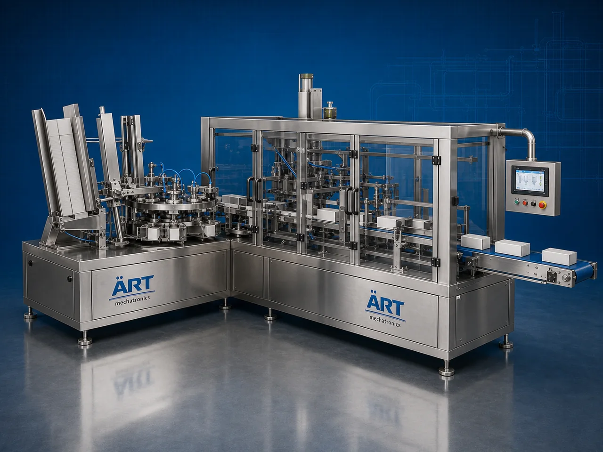

Mono Carton Packaging Machine (Automatic Cartoning & Mono Carton Packing System)
A Mono Carton Packaging Machine, also known as a Mono Carton Packing Machine, Automatic Cartoning Machine, Carton Packaging Machine, or Carton Filling & Sealing Machine, is an advanced industrial packaging solution designed for automatic carton erection, product feeding, carton filling, flap folding, sealing, coding, and high-speed cartoning operations for FMCG products, food products, pharmaceutical products, cosmetic products, and retail packaging applications.

About the Mono Carton Packing
Mono carton packaging systems are widely used for:
- FMCG carton packaging
- Pharmaceutical cartoning
- Cosmetic carton packaging
- Food product packaging
- Retail packaging applications
- Secondary packaging operations
- High-speed industrial cartoning
- Consumer product packaging
The machine improves:
- Packaging speed
- Product presentation
- Packaging consistency
- Product protection
- Shelf appeal
- Production efficiency
- Retail-ready packaging quality
Industrial mono carton packaging machines use:
- Automatic carton feeding systems
- Servo synchronized product handling
- PLC and HMI automation controls
- Precision carton folding systems
- Carton sealing and coding mechanisms
to automatically erect, fill, and seal mono cartons with superior packaging quality and high production efficiency.
Mono carton packaging machines are widely used in industries such as:
FMCG industries Food processing industries Pharmaceutical industries Cosmetic industries Pan masala industries Mouth freshener industries Consumer goods industries Nutraceutical industries
where premium retail packaging and high-speed secondary packaging operations are essential.
The machine is highly suitable for:
- Mono carton packaging
- Retail product cartoning
- Pouch-to-carton packaging
- Pharmaceutical carton packaging
- Cosmetic packaging
- FMCG packaging
- Food product packaging
ART Mechatronics offers high-performance mono carton packaging machines, engineered for continuous industrial operation, precise cartoning, premium packaging quality, and reliable long-term packaging automation.
Working Principle of Mono Carton Packaging Machine
- 1. Carton Feeding Flat mono cartons are loaded into carton feeding magazine.
- 2. Carton Erection Process Machine automatically picks and erects mono cartons using synchronized carton handling systems.
Servo synchronization ensures smooth carton movement and accurate carton positioning.
- 3. Product Feeding & Carton Filling Operation Machine handles: ✔ Pouches ✔ Sachets ✔ Bottles ✔ Tubes ✔ Pharmaceutical products ✔ Cosmetic products ✔ FMCG products
accurately and continuously.
- 4. Carton Folding & Sealing Process Machine performs: Flap folding Carton locking Hot glue sealing (optional) Tuck-in sealing Barcode printing
for premium retail packaging quality.
- 5. Coding & Inspection Integration Optional systems include: Batch coding Date printing QR code printing Vision inspection Check weighing
- 6. Finished Carton Discharge Finished mono cartons discharged automatically for: Case packing Palletizing Dispatch operations Retail distribution
Types of Mono Carton Packaging Machines
- 1. Automatic Cartoning Machine Designed for: ✔ High-speed industrial cartoning applications
- 2. Horizontal Mono Carton Machine Suitable for: ✔ FMCG and food packaging systems
- 3. Pharmaceutical Cartoning Machine Uses: ✔ Medicine and healthcare packaging applications
- 4. Cosmetic Carton Packaging Machine Designed for: ✔ Cosmetic and personal care product packaging systems
- 5. Servo Driven Cartoning Machine Suitable for: ✔ Precision high-speed cartoning operations
- 6. Fully Automatic Mono Carton Packaging System Designed for: ✔ Complete industrial secondary packaging automation lines
Industries Using Mono Carton Packaging Machines
🛒 FMCG Industry Consumer product mono carton packaging systems. 🍃 Food Processing Industry Food product and retail packaging systems. 💊 Pharmaceutical Industry Tablet, capsule, and healthcare carton packaging systems. 🧴 Cosmetic Industry Cosmetic cream, lotion, tube, and personal care carton packaging systems. 🌿 Pan Masala & Mouth Freshener Industry Pouch-to-carton packaging systems for retail products. 🌿 Nutraceutical Industry Supplement and wellness product carton packaging systems.
Features & Advantages
- High-speed automatic cartoning operation
- Accurate carton erection and product insertion
- Premium retail packaging appearance
- PLC and servo automation control systems
- Improves product protection and shelf presentation
- Reduces packaging wastage and labor dependency
- Supports multiple carton sizes and formats
- Reliable long-term industrial performance
- Smooth and continuous packaging operation
Technical Highlights
Machine Type: Automatic cartoning machine Mono carton packing machine Industrial carton packaging machine Packaging Material: Mono cartons Paperboard cartons Printed retail cartons Feeding Integration: Automatic product feeding systems Conveyor synchronization systems Servo product handling systems Features: PLC control system Servo synchronization Touchscreen HMI Batch coding integration Barcode printing system Sealing Type: Tuck-in seal Glue seal Flap locking system Automation: Semi-automatic Fully automatic industrial systems
Turnkey Mono Carton Packaging Solutions
ART Mechatronics offers: Complete mono carton packaging systems Automatic cartoning solutions Packaging automation integration systems Conveyor synchronization systems Installation & commissioning After-sales service & AMC
Why Choose Art Mechatronics
Expertise in industrial packaging and automation systems Customized mono carton packaging solutions for multiple industries High-performance and durable packaging technology Advanced PLC and servo automation systems Proven industrial packaging performance across sectors
Applications
FMCG Packaging Facilities Food Processing Industries Pharmaceutical Manufacturing Plants Cosmetic Packaging Units Pan Masala Manufacturing Plants Nutraceutical Industries
Get pricing & specs for the Mono Carton Packing
Share the product, target capacity, current process and plant location. These details help our engineers discuss the right machine or line configuration.
One partner, from design to start-up
ART Mechatronics designs, manufactures, installs and commissions your Mono Carton Packing solution with regional presence in India, UAE and Thailand.